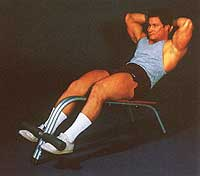
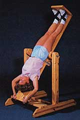
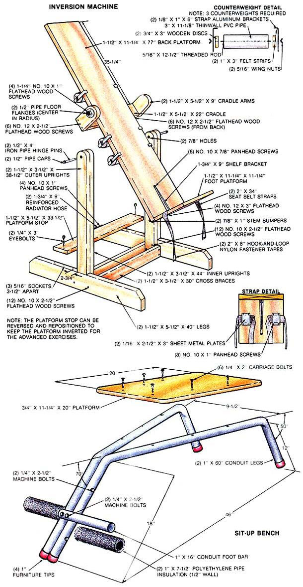

Don't let the joys of the season go to waist! Now you can indulge (in holiday goodies) and not bulge (in all the obvious places).
A year ago last summer, MOTHER's pages featured an eight-piece home fitness center made almost exclusively of dimensional lumber (see issues 87, page 112, and 88, page 98). Designed and used regularly by competition bodybuilder Carlos DeJesus, the wooden gym helped its creator win a few national championships . . . all for an investment of less than $200!
Now, equipment like Carlos's would be ideal for those people who plan to undertake a complete fitness program . . . but the additional investment in plates, bars, and other accessories might be prohibitive to individuals who simply want to maintain physical tone and hold off the assault of extra pounds. Consequently, MOTHER's research staff developed two inexpensive pieces of equipment that are flexible enough to be used with the wooden fitness center or, on their own, as a means of keeping (or attaining) a trim waistline. Like the DeJesus designs, they're straightforward and can be built with common hand tools . . . so what are you waiting for?
Our first fitness tool is an inclined platform, complete with a padded foot bar, which allows you to do anatomically correct sit-ups. The bar guarantees that your knees will be in the recommended bent position, while the incline lets gravity be a little harder on you to assure a worthwhile workout.
Start by locating one 16" and two 60" lengths of 1" thinwall conduit, commonly known as electrical metallic tubing (EMT). If you buy it from a contractor's scrap pile, perhaps you'll be able to borrow a conduit bender that'll allow you to make the necessary 50° and 70° arcs in the tubes that form the legs. (Ideally, the completed bends should be separated by 24" of straight tube, and the foot of the bench should be 17", and the head 12", off the floor.)
After the arcs are formed, use 1/4" X 2" carriage bolts to fasten the 11-1/4" X 20" platform to the unbent portions of the two pieces of conduit so that about 4" of board hangs over the end. The longer legs should be to gether and parallel and the shorter ones about 9-1/2" apart at the top and splayed slightly outward at the bottom. (If you feel you need a wider stance, allow for it when you bend the conduit.) Tie the two leg sections together with 1/4" X 2-1/2" bolts placed through the adjoining members.
Finally, fasten the 16" length of conduit halfway up the parallel legs, using two more 2-1/2" bolts, and pad the exposed metal with appropriately sized lengths of polyethylene pipe insulation. (You'll probably have to use contact cement to hold the split jackets in place.) Finish up by pushing furniture tips onto all the exposed conduit ends and, if you wish, gluing a section of scrap carpet to the upper surface of the platform.
Some consider it a costly novelty, and others wouldn't consider stretching without it . . . but we'll have to admit that short stints on this "back stretcher" seem to have a decided unkinking effect on tension-tired torsos and work-stressed sacroiliacs. What's more, this inversion machine provides the positioning for some hearty work on the waist, stomach, and lower back.
The chrome-and-foam versions offered in numerous mail-order catalogs can be fairly pricey . . . but this wooden whoops-a-daisy costs only about $30 to build and does the same job. When you select the lumber for this project, be sure to choose pieces that are straight and nearly knot-free. Likewise, don't skimp on the fastening hardware. Use the screw sizes recommended, countersink the heads, and double-lock all joints by using a good yellow furniture glue.
Note that the 33-1/2" 2 X 6 across the top of the legs is held in place with eyebolts dropped into one of three sets of sockets spaced 3-1/2" apart. This board, and the 2 X 4 adjacent to it, are equipped with rubberhose bumpers for the head of the back platform; the user's weight distribution will determine where the stop board is placed, or whether it's used at all.
The cradle and platform assembly deserves especially careful fitting. Be certain the butted joints are sound and free of splits, and don't use any shelf bracket smaller than the one indicated. To maintain the proper balance, attach the cradle so its upper edge is 35-1/4" from the top end of the platform, and center the floor flanges exactly 2-1/2" from the rounded edge of the cradle arms.
The ankle straps are simply 34" lengths of nylon seat belt material secured to the foot platform beneath two 16-gauge metal plates, which are large enough to allow the panhead fastening screws to secure the straps without actually passing through the belt webbing. Velcro hook-and-loop tape strips firmly stitched to the ends of the belts lock each strap's tails together. (The belts pass under the insteps, and the tails cross in front of the ankles and join at the back . . . hence the mating Velcro must be sewn to opposite faces of each strap.)
Once the cradle's installed in the framework (capped 1/2" pipe nipples passed through 7/8" holes in the frame uprights make inexpensive and sturdy pivot pins), you can assemble and place the counterweights. Each unit is simply an 11-1/8" section of 3" thinwall polyvinyl chloride (PVC) pipe filled with sand and plugged at the ends. With the central rod, nuts, and mounting brackets installed, each unit should weigh just about five pounds. The brackets hook around the edges of the back platform, and the wing nuts tighten or release these simple clamps.
Using the inversion machine requires some degree of experimentation, but the procedure is essentially the same for everyone. The idea is to strap your ankles in place, then have a friend slide the counterweights along the board until the platform is nearly balanced in a horizontal position when your hands are on your chest. At this point, he or she can secure the weights in position, and you should be able to control your rate of inversion by raising your hands and arms above your head accordingly . . . and, of course, return to an upright stance by moving them toward your feet.
Common sense would dictate that-especially at first-you should stay suspended only for a minute or so to let your body "unwind" . . . and that you consult a book on using inversion machines before attempting more advanced exercises, Furthermore, if you have high blood pressure or any reservations about the effects of being upturned, consult your physician before jumping "head over heels" into this project.
|
 |
 |
 |